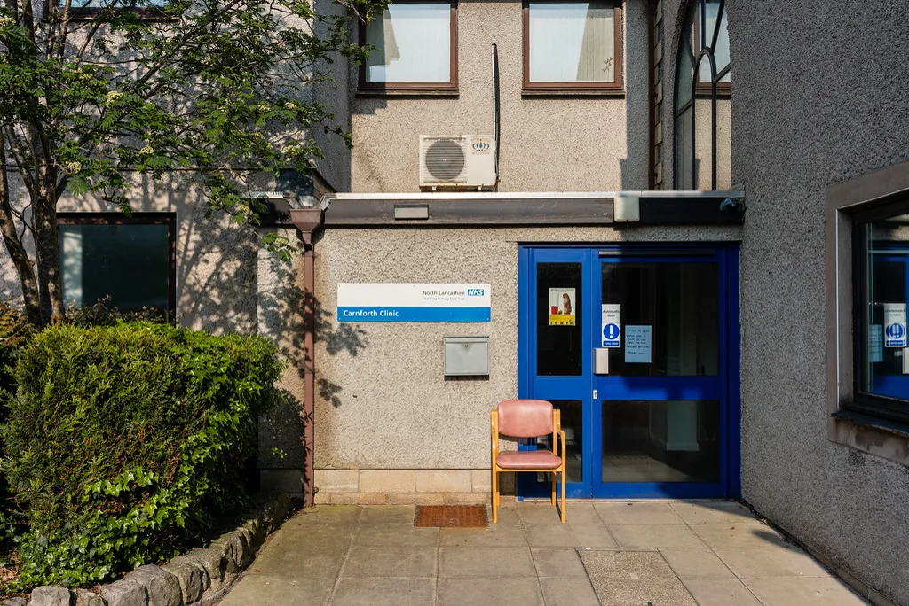

Leah Shenton
Assessment & return to sport
Mon, Wed · MSK and running
Physiotherapy · Bristol
Clinic note 12
Linden Clinic is a small practice for people recovering from injury, surgery or a body that has stopped keeping up. We treat the injury and the weeks around it.

01 — The approach
Most recovery happens between appointments. We spend the first session understanding the load you carry, then build a plan around the work, the school run and the sleep you actually get.
How a first appointment worksA full history and a physical assessment. We explain what is irritated, what is strong and what needs time.
Manual therapy when it helps, exercise when it lasts. You leave with two or three things to do, not twenty.
Your plan is written in the room, in language you can repeat at home. It changes when your week changes.
At six weeks we measure what changed, adjust the plan and discharge when you can manage without us.
02 — The clinicians
A small practice, deliberately. Every appointment is fifty minutes with one clinician and no double booking.
“I trusted the plan because it was explained, written down and changed when my week changed.”
Assessment & return to sport
Mon, Wed · MSK and running
Post-operative rehabilitation
Tue, Thu · surgical pathways
Persistent pain & movement
Fri · long-term plans
03 — Fees
No membership and no referral needed for self-paying patients. If we are not the right service, we will say so and point you somewhere better. Prices in GBP.
What every visit includes
We reply to every enquiry within one working day.
History, assessment and a written plan.
£85
Book first visitTreatment, review and plan adjustment.
£65
Book follow-upSix sessions with one clinician and a built-in review.
£330
Start a block04 — Book
Tell us what is bothering you and what you need to get back to. We reply within one working day with the next available appointment.
No. You can book directly as a self-paying patient. If your insurer requires a referral, we can work with your GP.
Comfortable clothing you can move in, any scan reports and a note of what makes the pain better or worse.